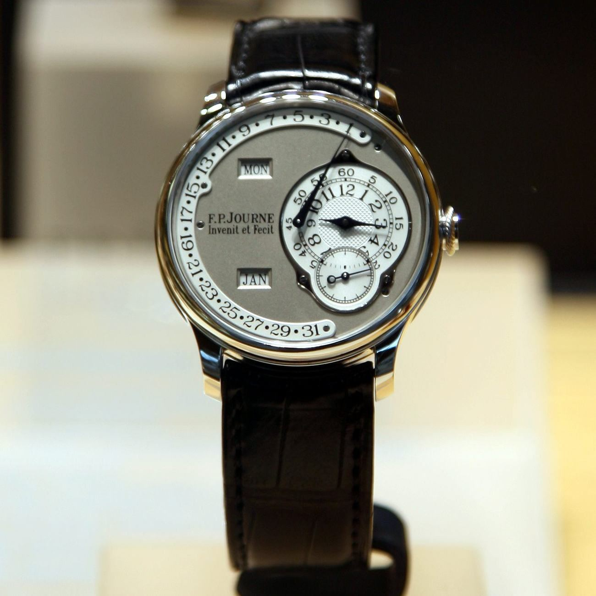

Serial 022 leaves the safe: the first Résonance ever sold heads to Geneva
One owner, 27 years, a serial number chosen to match his birth date. Phillips will offer F.P. Journe Chronomètre à Résonance no. 022/99R — almost certainly the first commercially delivered — on November 7–8, estimated at CHF 500,000 to 1 million.

§1Serial numbers are provenance now.
In 1999, a collector took delivery of a 38mm platinum wristwatch with a shiny pink-gold dial, silver-toned subdials and a brass movement built around a phenomenon most watchmakers considered folklore: two balances beating in sympathy, correcting each other by resonance. He chose the serial number himself — 022, to match his birth date — and then he kept the watch for 27 years. This November, F.P. Journe Chronomètre à Résonance no. 022/99R comes to Phillips' Geneva Watch Auction: XXIV, estimated at CHF 500,000 to 1,000,000.
The number on the caseback is the story. Journe's first twenty pieces were reserved for the subscribers who had financed his Tourbillon Souverain, and serial 021 stayed with the watchmaker as his own presentation piece — which makes 022, one of roughly ten pre-production examples, in Phillips' words almost certainly the first Chronomètre à Résonance ever commercially delivered. Early Résonance dials were fitted before the model's now-familiar layout settled; this one's pink-gold sheen marks it as a watch from before the watch became an institution.
The number on the caseback is the story.
§2Twenty-three million reasons this spring.
The market it enters has been rewriting its own records all year. Phillips has sold three historic Résonance examples in 2026 for a combined total above $23 million, crowned by the Souscription No. 007 at $13.9 million in May — a result that moved Journe decisively into the price territory once reserved for vintage Patek Philippe. A pre-production Résonance with single-owner provenance and a self-selected serial is precisely the kind of lot that has been detonating estimates.
§3The safes are opening on schedule.
The consignment also says something about where trophies now come from. The great early Journes were bought by people who knew the watchmaker when his atelier was small, and those owners are now in their sixties and seventies; each season a few decide the safe has held the watch long enough. Auction houses have adapted to a market where a handful of seven-figure lots carry entire sales — Sotheby's watch chief Geoff Hess spent last week describing exactly that adjustment to WatchPro.
Estimates on early Résonances have been a formality this year — the last one carried a fraction of its hammer. What 022 will test is whether the Journe bid is still deepening or merely holding its spring highs.
Either answer prices the next dozen consignments now being coaxed out of safes in Geneva and Hong Kong.
The trade, filed to your inbox before the New York open.
Prices, tenders and the one story that moved the industry overnight — read in ninety seconds.
Subscribe free →Ninety percent sold: the trophy watch market clears the room
Sotheby's watch sell-through hits 90% in a +64% half.